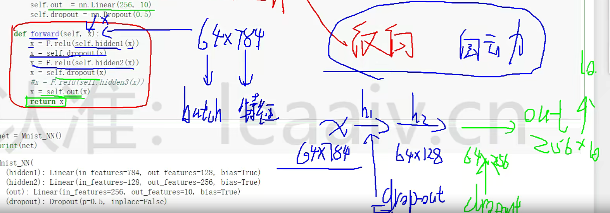
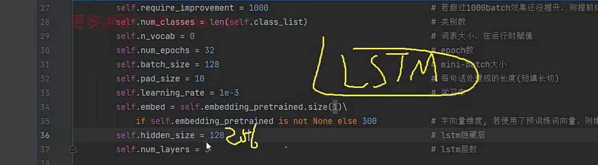

01 直播课回放
02 深度学习必备核心算法
01 神经网络算法解读
03 深度学习核心框架 PyTorch
01 PyTorch 框架介绍与配置安装
01 PyTorch 框架与其他框架区别分析
- 2015 caffe 写配置文件就能搭网络，安装麻烦
- 2016 tensorflow 大厂背书，api 难
- 2017 keras tensorflow 封装，api 变简单了，高校做实验流行
- 2018 tensorflow 2.x google 收购 keras
- 2019 pytorch api 简单，看实战案例就能上手，套模板，向后支持好
02 CPU 与 GPU 版本安装方法解读


gpu 版本要安 cuda

推荐转 cuda 11.x 版本


02 使用神经网络进行分类任务
01 数据集与任务概述

tensorflow 和 pytorch 都是用 tensor（张量、矩阵），numpy 的数据结构是 ndarray
神经网络就是对矩阵进行各种运算
import torch
print(torch.__version__) # 1.12.0+cpu
# %matplotlib inline
# 下载数据
from pathlib import Path
import requests
DATA_PATH = Path("data")
PATH = DATA_PATH / 'mnist'
PATH.mkdir(parents=True, exist_ok=True)
URL = "http://deeplearning.net/data/mnist/"
FILENAME = 'mnist.pkl.gz'
if not (PATH / FILENAME).exists():
content = requests.get(URL + FILENAME).content
(PATH / FILENAME).open("wb").write(content)
# 加载数据
import pickle
import gzip
with gzip.open((PATH / FILENAME).as_posix(), 'rb') as f:
((X_train, y_train), (x_valid, y_valid), _) = pickle.load(f, encoding='latin-1')
from matplotlib import pyplot as plt
plt.switch_backend('TkAgg')
import numpy as np
# imshow：展示图片，28*28=784
plt.imshow(X_train[0].reshape((28, 28)), cmap="gray")
print(X_train[0].shape) # (784,) -> 其中一个样本
plt.show()
# 50000个样本
print('xtrain shape:\n', X_train.shape) # (50000, 784)
# 样本是哪个数字
print('ytrain:\n', y_train[:5])
# 数据要转成tensor才能训练
02 基本模块应用测试
全连接层，就是每层都是 wx+b 的操作

最后一层输出 10 个数据，表示 10 分类，输出结果是输入在各个分类的概率

# 数据要转成tensor才能训练
import torch
# 映射成tensor格式
# 参数1: 要对参数2执行的函数
# 参数2: 要被操作的数据
X_train, y_train, x_valid, y_valid = map(
torch.tensor, (X_train, y_train, x_valid, y_valid)
)
# n, c = X_train.shape
# X_train, X_train.shape, y_train.min(), y_train.max()
print('x train:\n', X_train[:5])
print('x train shape:\n', X_train.shape) # torch.Size([50000, 784])
# torch.nn.functional 很多层和函数在这里会见到
# 实际构建可能会用别的方式
import torch.nn.functional as F
# 交叉熵
loss_func = F.cross_entropy
def model(xb):
# mm就是矩阵乘法
# x*w+b
return xb.mm(weights) + bias
# 一次训练的样本个数 batch_size
bs = 64
xb = X_train[0:bs]
yb = y_train[0:bs]
# 784*10的服从正态分布的随机数矩阵
weights = torch.randn([784, 10], dtype=torch.float, requires_grad=True)
bias = torch.zeros(10, requires_grad=True)
# 计算交叉熵
print('loss:\n', loss_func(model(xb), yb))
03 网络结构定义方法



# 用torch创建模型，简化代码
from torch import nn
class Minst_NN(nn.Module):
def __init__(self):
super().__init__()
# 前一层输出是后一层输入,所以784*128后是128,x
# Linear -> wx+b
# 输入784个像素点，输出128个特征
self.hidden1 = nn.Linear(784, 128)
self.hidden2 = nn.Linear(128, 256)
# self.hidden3 = nn.Linear(256, 512)
# 输出层
self.out = nn.Linear(256, 10)
# 训练时随机去掉多少神经元（每次只有一部分神经元参与训练），防止过拟合
self.dropout = nn.Dropout(0.5)
# 前向传播，需要自己定义
# 反向传播，torch自动定义
def forward(self, x):
# x是输入 784*batch_size
# F.relu是激活函数
x = F.relu(self.hidden1(x))
# 随机去掉神经元(每个全连接层都要做)
x = self.dropout(x)
x = F.relu(self.hidden2(x))
x = self.dropout(x)
x = self.out(x)
return x
net = Minst_NN()
print('model:\n', net)
# torch自动帮我们初始化参数(权重w，偏置值bias)
for name, parameter in net.named_parameters():
# name指某层的某个参数的名称
print('name:\n', name)
# parameter是某层的某个参数
print('parameter:\n', parameter)
print('parameter size:\n', parameter.size())
04 数据源定义简介

# 使用TensorDataset和DataLoader简化
from torch.utils.data import TensorDataset # 用的少
from torch.utils.data import DataLoader
train_ds = TensorDataset(X_train, y_train)
# dataloader把数据按batch_size打包，然后发送给gpu
# shuffle是打乱数据
train_dl = DataLoader(train_ds, batch_size=bs, shuffle=True)
valid_ds = TensorDataset(x_valid, y_valid)
valid_dl = DataLoader(valid_ds, batch_size=bs * 2)
def get_data(train_ds, valid_ds, bs):
return (
DataLoader(train_ds, batch_size=bs, shuffle=True),
# DataLoader(valid_ds, batch_size=bs)
DataLoader(valid_ds, batch_size=bs * 2)
)
import numpy as np
def fit(steps, model, loss_func, opt, train_dl, valid_dl):
'''
训练
:param steps: 迭代多少次
:param model: 模型
:param loss_func: F.cross 交叉熵计算函数
:param opt: 优化器
:param train_dl:
:param valid_dl:
:return:
'''
for step in range(steps):
# 切换为训练模式
# 会更新w和b
model.train()
for xb, yb in train_dl:
# xb [batch_size,784]
# yb [batch_size]
# 计算损失并优化
loss_batch(model, loss_func, xb, yb, opt)
# 切换为验证模式
model.eval()
# 没有梯度，不更新w和b
with torch.no_grad():
# nums是输入的个数，losses是损失
losses, nums = zip(
*[loss_batch(model, loss_func, xb, yb) for xb, yb in valid_dl]
)
# 计算总损失(losses*nums).sum() -> 平均 / nums.sum()
val_loss = np.sum(np.multiply(losses, nums)) / np.sum(nums)
print(f'当前step:{step},验证集损失:{val_loss}')
05 损失与训练模块分析
一个 epoch 是将整个训练集训练一遍，每个 batch 是每次训练用的单个数据包大小
from torch import optim # 优化器
def get_model():
model = Minst_NN()
# 参数1：更新哪些参数
# 参数2：学习率
return model, optim.SGD(model.parameters(), lr=0.001)
# return model, optim.Adam(model.parameters(), lr=0.001)
def loss_batch(model, loss_func, xb, yb, opt=None):
# 计算预测值和真实值的loss（误差）
loss = loss_func(model(xb), yb)
# 如果有优化器
if opt is not None:
# 反向传播计算梯度，
loss.backward()
# 梯度计算好后，可以进行单次优化，参数更新
opt.step()
# 默认pytorch会累加上之前的梯度
# 这里清空梯度，防止出现累加
opt.zero_grad()
# loss.item -> 取出张量具体位置的元素元素值
# 返回loss
return loss.item(), len(xb)
06 训练一个基本的分类模型
# 训练
train_dl, valid_dl = get_data(train_ds, valid_ds, bs)
model, opt = get_model()
fit(100, model, loss_func, opt, train_dl, valid_dl)
correct = 0
total = 0
for xb, yb in valid_dl:
outputs = model(xb)
# max(数据，比较的维度)
# outputs的列是不同结果的可能性
# max_val,index = max(outputs.data, 1) -> 求outputs里值最大的列
# 这里的最大值是结果概率，索引表示是哪一列，索引才是我们需要的
_, predicted = torch.max(outputs.data, 1) # 最大的值和索引
# 总样本数
total += yb.size(0) # + 64
# .item -> 得到tensor里的值
# correct -> 预测正确的个数
correct += (predicted == yb).sum().item()
print('correct:\n', correct)
print('total:\n', total)
# correct / total -> 小数
# 100 * correct / total -> 十位数 %
print('Accuracy of the network on the 10000 test images: %d %%' % (100 * correct / total))
07 参数对结果的影响

03 神经网络回归任务-气温预测
标准化
batch 分批计算，减少内存压力

Adam 和 SGD 思想是一样的，但是 Adam 在更新参数时记录了‘惯性’，后续优化会考虑这个惯性，从而更快地到达最优解

如何添加更多层
# 回归：输入很多样本，有一些特征以及结果，经过神经网络计算后，得出一个预测值
import numpy as np
import pandas as pd
import matplotlib.pyplot as plt
plt.switch_backend('TkAgg')
import torch
import torch.optim as opt
import warnings
# 去掉一些没用的警告
warnings.filterwarnings('ignore')
# %matplotlib inline
features = pd.read_csv('temps.csv')
print('features:\n', features.head())
print('数据维度:\n', features.shape) # (348, 9)
# 处理时间数据
import datetime
# 年月日
years = features['year']
months = features['month']
days = features['day']
# 格式化，datetime格式，为了画图方便
dates = [str(int(year)) + '-' + str(int(month)) + '-' + str(int(day)) for year, month, day in zip(years, months, days)]
dates = [datetime.datetime.strptime(date, '%Y-%m-%d') for date in dates]
print('dates:\n', dates[:5])
# 画图
# 指定默认风格
plt.style.use('fivethirtyeight')
# 设置布局
# nrows 2 ncols 2 -> 2行2列
fig, ((ax1, ax2), (ax3, ax4)) = plt.subplots(nrows=2, ncols=2, figsize=(10, 10))
# 改变x轴坐标的显示方法可以斜着表示,不用平着挤一堆
# rotation=45: 倾斜45度
fig.autofmt_xdate(rotation=45)
# 标签值
# plot(x,y)
ax1.plot(dates, features['actual'])
ax1.set_xlabel('')
ax1.set_ylabel('Temperature')
ax1.set_title('Max Temp')
# 昨天
ax2.plot(dates, features['temp_1'])
ax2.set_xlabel('')
ax2.set_ylabel('Temperature')
ax2.set_title('Previous Max Temp')
# 前天
ax3.plot(dates, features['temp_2'])
ax3.set_xlabel('Date')
ax3.set_ylabel('Temperature')
ax3.set_title('Two Days Prior Max Temp')
# friend
ax4.plot(dates, features['friend'])
ax4.set_xlabel('Date')
ax4.set_ylabel('Temperature')
ax4.set_title('Friend Estimate')
# 不同图片之间的间隔
plt.tight_layout(pad=2)
plt.show()
# feature['week']的值是Fri之类的单词缩写,可以使用one-hot给这些值编码出唯一的数值编号
# 独热编码 -> get_dummies -> 自动判断非数值,
# 比如week会被分成7列(因为只有7种值),
# 然后是哪一个(如Fri),则那列的值为1(week_fri: True)
features = pd.get_dummies(features)
print('feature:\n', features[:5])
# 标签
labels = np.array(features['actual'])
# 在特征中去掉标签列
features = features.drop('actual', axis=1)
# 保存列名
feature_list = list(features.columns)
# 转换成合适的格式
features = np.array(features)
print('features shape:\n', features.shape) # (348, 14)
# 预处理 -> 标准化(去量纲),因为模型会将数值大的特征(col)看作重要的,但是实际上并不能这么看
from sklearn import preprocessing
# 去均值,比上标准差
# StandardScaler: 标准化
# fit_transform: 执行并转换
input_features = preprocessing.StandardScaler().fit_transform(features)
print('input_features:\n', input_features[:5])
print('input_features shape:\n', input_features.shape) # (348, 14)
# 构建网络模型
x = torch.tensor(input_features, dtype=float)
y = torch.tensor(labels, dtype=float)
# 权重参数初始化
# input_features shape (348,14) -> 14,128 -> 128 -> 128,1 -> 1
weights = torch.randn((14, 128), dtype=float, requires_grad=True)
biases = torch.randn(128, dtype=float, requires_grad=True)
weights2 = torch.randn((128, 1), dtype=float, requires_grad=True)
biases2 = torch.randn(1, dtype=float, requires_grad=True)
learning_rate = 0.001
losses = []
for i in range(1000):
# 计算隐层
hidden = x.mm(weights) + biases
# 加入激活函数
hidden = torch.relu(hidden)
# 预测结果
predictions = hidden.mm(weights2) + biases2
# 计算损失(均方误差)
loss = torch.mean((predictions - y) ** 2)
# 记录损失
losses.append(loss.data.numpy()) # 画图需要numpy
# 打印损失值
if i % 100 == 0:
print('loss: ', loss)
# 反向传播计算
loss.backward()
# 更新参数
# 梯度（导数）的方向实际上是向上的（正数），所以要加上负号，改为下降
weights.data.add_(-learning_rate * weights.grad.data)
biases.data.add_(-learning_rate * biases.grad.data)
weights2.data.add_(-learning_rate * weights2.grad.data)
biases2.data.add_(-learning_rate * biases2.grad.data)
# 每次迭代都清空
weights.grad.data.zero_()
biases.grad.data.zero_()
weights2.grad.data.zero_()
biases2.grad.data.zero_()
# torch.Size([348, 1])
print(predictions.shape)
# 使用torch构建网络
# 输入的特征个数 14
input_size = input_features.shape[1]
hidden_size = 128
output_size = 1
# 分批计算，减少内存压力
batch_size = 16
# 按顺序构建网络
# torch会自动初始化，只需要指定size就行
my_nn = torch.nn.Sequential(
# 线性层（全连接层）
torch.nn.Linear(input_size, hidden_size),
# 激活函数
torch.nn.Sigmoid(), # nn.Relu()
torch.nn.Linear(hidden_size, output_size),
)
# 均方误差
cost = torch.nn.MSELoss(reduction='mean')
optimizer = torch.optim.Adam(my_nn.parameters(), lr=0.001)
print(len(input_features))
# 训练网络
losses = []
for i in range(1000):
batch_loss = []
# MINI-Batch方法来训练
# len(input_features) = 348
# 从0~348，每次取64（0->64->128->...)
for start in range(0, len(input_features), batch_size):
# 计算end（取得的batch的右界），如果超了，就设为348( == len(input_features))
end = start + batch_size if start + batch_size < len(input_features) else len(input_features)
# 得到 1 batch_size的x和y数据
xx = torch.tensor(input_features[start:end], dtype=torch.float, requires_grad=True)
yy = torch.tensor(labels[start:end], dtype=torch.float, requires_grad=True)
# 预测
prediction = my_nn(xx)
# 计算损失
loss = cost(prediction, yy)
# 清0梯度
optimizer.zero_grad()
# 反向传播计算梯度
loss.backward(retain_graph=True)
# 根据梯度进行优化
optimizer.step()
batch_loss.append(loss.data.numpy())
# 打印损失
if i % 100 == 0:
losses.append(np.mean(batch_loss))
print('mean batch_loss:\n', i, np.mean(batch_loss))
x = torch.tensor(input_features, dtype=torch.float)
predict = my_nn(x).data.numpy()
# 转换日期格式
dates = [str(int(year)) + '-' + str(int(month)) + '-' + str(int(day))
for year, month, day in zip(years, months, days)]
dates = [datetime.datetime.strptime(date, '%Y-%m-%d') for date in dates]
# 创建一个表格来存日期和其对应的标签数值
true_data = pd.DataFrame(data={'date': dates, 'actual': labels})
# 同理，再创建一个来存日期和其对应的模型预测值
months = features[:, feature_list.index('month')]
days = features[:, feature_list.index('day')]
years = features[:, feature_list.index('year')]
test_dates = [str(int(year)) + '-' + str(int(month)) + '-' + str(int(day))
for year, month, day in zip(years, months, days)]
test_dates = [datetime.datetime.strptime(date, '%Y-%m-%d') for date in test_dates]
predictions_data = pd.DataFrame(data={'date': test_dates, 'prediction': predict.reshape(-1)})
# 画图
# 真实值
plt.plot(true_data['date'], true_data['actual'], 'b-', label='actual')
# 预测值
plt.plot(predictions_data['date'], predictions_data['prediction'], 'ro', label='prediction')
# 倾斜x轴
plt.xticks(rotation=60)
plt.legend()
# 图名
plt.xlabel('Date')
plt.ylabel('Maximum Temperature (F)')
plt.title('Actual and Predicted Values')
plt.show()
04 卷积网络参数解读分析
01 输入特征通道分析
卷积网络里的数据是有关联的(表示图片的不同点),之前那个线性回归的输入,每个数据之间是没关系的


# 卷积网络中的输入和层与传统神经网络有区别，需要重新设计，训练模块基本一致
import torch
import torch.nn as nn
import torch.optim as opt
import torch.nn.functional as F
# datasets包里有一些数据集和对数据集的操作
# transforms包里主要是预处理
from torchvision import datasets, transforms
import matplotlib.pyplot as plt
import numpy as np
# %matplotlib inline
# 读取数据
# 图像数据集,用CNN
# 图像有三通道(RGB),还有灰度图
# 这里是灰度图,也就是,batch_size*28*28*1 (1是灰度)
# 定义超参数
input_size = 28 # 图像尺寸28 -> 28*28=748
num_classes = 10 # 标签的种类数
num_epochs = 3 # 训练的总循环周期
batch_size = 64 # 一批次的大小，64张图
# 训练集
train_dataset = datasets.MNIST(root='./data',
train=True,
transform=transforms.ToTensor(),
download=True)
# 测试集
test_dataset = datasets.MNIST(root='./data',
train=False,
transform=transforms.ToTensor())
# 构建batch数据
train_loader = torch.utils.data.DataLoader(dataset=train_dataset,
batch_size=batch_size,
shuffle=True)
test_loader = torch.utils.data.DataLoader(dataset=test_dataset,
batch_size=batch_size,
shuffle=True)
02 卷积网络参数解读
padding 就是给输入加一圈 0，因为边界有时候被卷积核计算的次数比内部的少，所以加一圈可以增加被卷积计算的次数

右上角的公式可以计算 padding 取什么值，如果有小数，就向下取整（pytorch）

03 卷积网络模型训练

# 构建卷积网络
# > 一般卷积层,relu层,池化层可以写一套
# > 卷积最后结果还是一个特征图,需要把图转换成向量才能做分类或者回归任务
class CNN(nn.Module):
def __init__(self):
super(CNN, self).__init__()
self.conv1 = nn.Sequential( # 输入大小 (1,28,28)
# 向量做1维卷积 -> 基本用不上 -> 用全连接比较多
# 图像做2维卷积
# 视频(时间+多图)做3维卷积
nn.Conv2d(
in_channels=1, # 灰度图,1个管道
out_channels=16, # 要得到多少个特征图 -> 卷积核个数
kernel_size=5, # 卷积核大小(5x5) -> 越小,可以得到的特征越多
stride=1, # 步长
padding=2, # 如果希望卷积后大小跟原来一样,需要设置padding=(kernel_size-1)/2 if stride=1
),
nn.ReLU(), # relu层,激活
# 一般pool池化就是把输出的shape变为原来的一半
# 在卷积神经网络中通常会在相邻的卷积层之间加入一个池化层，
# 池化层可以有效的缩小参数矩阵的尺寸，
# 从而减少最后连接层的中的参数数量。
# 所以加入池化层可以加快计算速度和防止过拟合的作用。
nn.MaxPool2d(kernel_size=2), # 进行池化操作(2x2区域),输出结果为(16,14,14) 16=out_channels
)
self.conv2 = nn.Sequential( # 下一个套餐的输入(16,14,14)
# 参数和上面一样
nn.Conv2d(16, 32, 5, 1, 2), # 输出(32,14,14)
nn.ReLU(),
nn.Conv2d(32, 32, 5, 1, 2),
nn.ReLU(),
nn.MaxPool2d(2), # 输出(32,7,7)
)
self.conv3 = nn.Sequential( # 下一个套餐的输入(32,7,7)
nn.Conv2d(32, 64, 5, 1, 2), # 输出(64,7,7)
nn.ReLU(),
)
# 输入64*7*7的x,得到在10个可能分类的结果
self.out = nn.Linear(64 * 7 * 7, 10) # 全连接层
def forward(self, x):
# 输入的是 1 batch_size -> 64 * 1*28*28
# print(x.size()) # torch.Size([64, 1, 28, 28])
x = self.conv1(x)
x = self.conv2(x)
# print(x.size()) # torch.Size([64, 32, 7, 7])
x = self.conv3(x)
# print(x.size()) # torch.Size([64, 64, 7, 7])
# reshape -> 64*7*7 -> 64*N (-1自动推导,其值使各维度相乘总数不变)
x = x.view(x.size(0), -1) # flatten操作,结果为(batch_size,64*7*7)
# print(x.size()) # torch.Size([64, 3136])
output = self.out(x)
return output
# 评估标准: 准确率
def accuracy(predictions, labels):
# max_val,max_idx = max(数据，比较的维度)
pred = torch.max(predictions.data, 1)[1]
# view_as: 该函数的作用是将调用函数的变量，转变为同参数tensor同样的形状。
# pred.eq(labels.data).sum() -> 找出预测正确的个数
rights = pred.eq(labels.data.view_as(pred)).sum()
return rights, len(labels)
# 训练模型
# 实例化
net = CNN()
# 损失函数
criterion = nn.CrossEntropyLoss()
# 优化器
optimizer = opt.Adam(net.parameters(), lr=0.001)
# 训练循环
for epoch in range(num_epochs):
# 当前epoch的结果保存下来
train_rights = []
# enumerate:返回值有两个：一个是序号，一个是数据（包含训练数据和标签）
for batch_idx, (data, target) in enumerate(train_loader): # 对容器中的每一批进行循环
# 训练模式,可更新梯度
net.train()
output = net(data)
loss = criterion(output, target)
# 梯度清0
optimizer.zero_grad()
# 反向传播计算梯度
loss.backward()
# 优化
optimizer.step()
# 计算准确率 -> return rights, len(labels)
right = accuracy(output, target)
train_rights.append(right)
if batch_idx % 100 == 0:
# 验证模式,不更新梯度
net.eval()
val_rights = []
for (data, target) in test_loader:
output = net(data)
right = accuracy(output, target)
val_rights.append(right)
# 准确率计算
# sum(right%) , sum(len(val))
train_r = (sum([tup[0] for tup in train_rights]), sum([tup[1] for tup in train_rights]))
val_r = (sum([tup[0] for tup in val_rights]), sum([tup[1] for tup in val_rights]))
print('当前epoch: {} [{}/{} ({:.0f}%)]\t损失: {:.6f}\t训练集准确率: {:.2f}%\t测试集准确率: {:.2f}%'.format(
epoch, batch_idx * batch_size, len(train_loader.dataset),
100 * batch_idx / len(train_loader),
loss.data,
100 * train_r[0].numpy() / train_r[1],
100 * val_r[0].numpy() / val_r[1],
))
后面很多使用经典模型，很多参数和模型结构都不需要调整
05 图像识别模型与训练策略（重点）
01 任务分析与图像数据基本处理


import os
import matplotlib.pyplot as plt
# %matplotlib inline
import numpy as np
import torch
from torch import nn
import torch.optim as optim
import torchvision
# https://pytorch.org/docs/stable/torchvision/index.html
from torchvision import transforms, models, datasets
import imageio
import time
import warnings
warnings.filterwarnings('ignore')
import random
import sys
import copy
import json
from PIL import Image
# 数据读取与预处理
data_dir = './flower_data/'
train_dir = data_dir + '/train'
valid_dir = data_dir + '/valid'
02 数据增强模块
可以通过变换数据来增加数据的多样性
随机裁剪


使用别人提供的均值和标准差(imageNet 提供)
([0.485, 0.456, 0.406]这一组平均值是从 imagenet 训练集中抽样算出来的。)

# 制作数据源
data_transforms = {
'train':
# 按顺序执行预处理操作
transforms.Compose([
# 一般resize都是变成正方形
# 可以设置成其他大小,越大计算越慢,越小越快
transforms.Resize([96, 96]), # 图片大小不一致,这里resize使之一致
transforms.RandomRotation(45), # 随机旋转,-45到45之间随机选
# 随机裁剪后变成 -> [64,64]
transforms.CenterCrop(64), # 从中心开始裁剪
transforms.RandomHorizontalFlip(p=0.5), # 随机水平翻转 选择一个概率
transforms.RandomVerticalFlip(p=0.5), # 随机垂直翻转
# 这种数据变换（增强）方式用得不多
# 参数1：亮度，参数2：对比度，参数3：饱和度，参数4：色相
transforms.ColorJitter(brightness=0.2, contrast=0.1, saturation=0.1, hue=0.1),
# 用的少
transforms.RandomGrayscale(p=0.025), # 依据一定的概率将图片转换成灰度图，3通道就是R=G=B
transforms.ToTensor(), # 转为tensor
# 标准化
transforms.Normalize([0.485, 0.456, 0.406], [0.229, 0.224, 0.225]) # 均值，标准差
]),
'valid':
transforms.Compose([
transforms.Resize([64, 64]),
transforms.ToTensor(),
# 训练集怎么标准化，测试集也怎么标准化
transforms.Normalize([0.485, 0.456, 0.406], [0.229, 0.224, 0.225]) # 均值，标准差
])
}
03 数据集与模型选择

batch_size = 128
# 因为文件夹名称（1~x）就是对应的分类（label），所以直接通过取文件夹名称作为标签
# 这里得到文件路径，并且对应上transform处理
image_datasets = \
{x: datasets.ImageFolder(os.path.join(data_dir, x), data_transforms[x]) for x in ['train', 'valid']}
dataloaders = \
{x: torch.utils.data.DataLoader(image_datasets[x], batch_size=batch_size, shuffle=True) for x in ['train', 'valid']}
dataset_sizes = {x: len(image_datasets[x]) for x in ['train', 'valid']}
class_names = image_datasets['train'].classes
print('class names:\n', class_names[:5])
print('datasets:\n', image_datasets)
print('dataloaders:\n', dataloaders)
print('data size:\n', dataset_sizes)
# 读取标签对应的实际name
with open('cat_to_name.json', 'r') as f:
cat_to_name = json.load(f)
print('cat_to_name:\n', cat_to_name)
# 加载models提供的模型，并直接使用训练好的权重当作初始化参数
# 第一次执行需要下载，可以自己下载然后放到对应目录
model_name = 'resnet' # 可选 ['resnet','alexnet','vgg','squeezenet','densenet','inception']
# 是否使用模型训练好的特征
feature_extract = True # 都用别人的特征，先不更新 -> 冻住
# 是否使用GPU
train_on_gpu = torch.cuda.is_available()
if not train_on_gpu:
print('CUDA is not available. Training on CPU...')
else:
print('CUDA is available. Training on GPU...')
device = torch.device('cuda:0' if torch.cuda.is_available() else 'cpu')
04 迁移学习方法解读
迁移学习：在别人的模型基础上进行微调
把别人的直升机拆开然后研究怎么使，再改进
别人的模型的权重作为我们的初始参数，而且也不一定别人的模型训练过我们的数据集

可以根据自己有的数据集的大小，来考虑要冻住哪些层，比如数据集大，预估可以训练效果不错，那就可以只把别人模型训练出的参数作为初始化权重，而不使用其现成的所有层；如果数据集较小，可以选择冻住大部分别人模型训练好的神经网络层，只训练改变一小部分层

# 是否更新参数
def set_parameter_requires_grad(model: nn.Module, feature_extracting):
if feature_extracting:
for param in model.parameters():
# 不更新参数
# requires_grad表示反向传播时要不要计算它的梯度
param.requires_grad = False
model_ft = models.resnet18() # 18层的比较快，条件好的可以选152
print(model_ft)
05 输出层与梯度设置
BatchNorm2d 就是以 Batch 维度进行归一化（标准化），每次卷积后都会进行

avgpool 层，假设输入为 14*14*512，则将 14*14 求平均得 1*512，就是变成一维的
fc 层，输出是 1000（千分类），我们需要修改输出层

06 输出类别个数修改
保存模型就是保存权重、网络结构等

# 输出层改为自己的
def initialize_model(model_name, num_classes, feature_extract, use_pretrained=True):
model_ft = models.resnet18(pretrained=use_pretrained)
# 是否更新参数
set_parameter_requires_grad(model_ft, feature_extract)
# 得到最后一层(输出层)的输入元素数量
num_fits = model_ft.fc.in_features
# 将输入元素数量和我们自己定义的输出元素数量定义一个新的输出层
# 并替换原输出层
model_ft.fc = nn.Linear(num_fits, 102)
input_size = 64 # 输入大小根据自己的配置
return model_ft, input_size
# 设置哪些层需要训练
model_ft, input_size = initialize_model(model_name, 102, feature_extract, use_pretrained=True)
# GPU?CPU?
model_ft = model_ft.to(device)
# 模型保存,名称自拟
filename = 'best.pt'
# 是否训练所有层
params_to_update = model_ft.parameters()
print('Params to learn:')
if feature_extract:
params_to_update = []
for name, param in model_ft.named_parameters():
if param.requires_grad == True:
params_to_update.append(param)
print('to_update param:\t', name)
else:
for name, param in model_ft.named_parameters():
if param.requires_grad == True:
print('to_update param:\t', name)
# 此时输出fc.weight fc.bias,因为我们把model的所有参数设置为不变,
# 但是我们自己定义的fc层的参数默认是会改变的
07 优化器与学习率衰减
学习率衰减
# 优化器设置
# params_to_update -> 要更新哪些参数
optimizer_ft = optim.Adam(params_to_update, lr=1e-2)
# 学习率衰减策略: 学习率每7epoch(step_size)衰减成原来的1/10
scheduler = optim.lr_scheduler.StepLR(optimizer_ft, step_size=10, gamma=0.1)
# 计算损失的(交叉熵)
criterion = nn.CrossEntropyLoss()
# 训练
def train_model(model: nn.Module,
dataloaders: torch.utils.data.DataLoader,
criterion,
optimizer: optim.Optimizer,
num_epochs=25,
filename='best.pt'):
# 记录开始时间
since = time.time()
# 记录最好的那一次准确率
best_acc = 0
# 放到设备进行训练
model.to(device)
# 训练时要打印的指标
val_acc_history = []
train_acc_history = []
valid_losses = []
train_losses = []
# 学习率
# optimizer.param_groups[0]包含很多参数
LRs = [optimizer.param_groups[0]['lr']]
# 最好的那次模型，后续会变，先初始化
# state_dict：模型里的参数
best_model_tws = copy.deepcopy(model.state_dict())
# 遍历，训练
for epoch in range(num_epochs):
print('Epoch {}/{}'.format(epoch, num_epochs - 1))
print('-' * 10)
# 训练和验证
for phase in ['train', 'valid']:
# 指定模式
if phase == 'train':
model.train()
else:
model.eval()
running_loss = 0.0
running_corrects = 0
# 数据取个遍(每次只取 1 batch_size)
for inputs, labels in dataloaders[phase]:
# 数据放到设备中，
inputs = inputs.to(device)
labels = labels.to(device)
# 梯度清零
optimizer.zero_grad()
# 只有训练时才计算梯度
outputs = model(inputs)
# 计算损失
loss = criterion(outputs, labels)
# val,idx=max(data,axis)
_, preds = torch.max(outputs, 1)
# 训练阶段更新权重
if phase == 'train':
# 计算梯度
loss.backward()
# 更新权重
optimizer.step()
# 计算损失
running_loss += loss.item() * inputs.size(0) # 0表示batch_size那个维度
running_corrects += torch.sum(preds == labels.data) # 预测结果的最大可能取值是否和真实值一致
epoch_loss = running_loss / len(dataloaders[phase].dataset) # 算平均loss
# running_corrects是预测正确的个数
epoch_acc = running_corrects.double() / len(dataloaders[phase].dataset) # 算准确率
# 计算本epoch执行了多长时间
time_elapsed = time.time() - since
print('Time elapsed {:.0f}m {:.0f}s'.format(time_elapsed // 60, time_elapsed % 60))
print('{} Loss: {:.4f} Acc: {:.4f}'.format(phase, epoch_loss, epoch_acc))
# 得到最好的那次模型
if phase == 'valid' and epoch_acc > best_acc:
best_acc = epoch_acc
best_model_tws = copy.deepcopy(model.state_dict())
state = {
'state_dict': model.state_dict(), # 字典里key就是各层的名字，值是训练好的权重
'best_acc': best_acc,
'optimizer': optimizer.state_dict(),
}
# 保存参数和网络结构
torch.save(state, filename)
if phase == 'valid':
val_acc_history.append(epoch_acc)
valid_losses.append(epoch_loss)
if phase == 'train':
train_acc_history.append(epoch_acc)
train_losses.append(epoch_loss)
print('Optimizer learning rate: {:.7f}'.format(optimizer.param_groups[0]['lr']))
LRs.append(optimizer.param_groups[0]['lr'])
print()
# 学习率衰减
# (我们设置了step，但是不用担心，每次调用都会累加次数，
# 直到达到step值，才会更新学习率)
scheduler.step()
time_elapsed = time.time() - since
print('Training complete in {:.0f}m {:.0f}s'.format(time_elapsed // 60, time_elapsed % 60))
print('Best val Acc: {:.4f}'.format(best_acc))
# 训练完用最好的一次模型作为最终结果
model.load_state_dict(best_model_tws)
return model, val_acc_history, train_acc_history, valid_losses, train_losses, LRs
08 模型训练方法
# 开始训练 > 这里只训练了输出层
model_ft, val_acc_history, train_acc_history, valid_losses, train_losses, LRs = \
train_model(model_ft, dataloaders, criterion, optimizer_ft, num_epochs, filename)
09 重新训练全部模型
一般的模型层数: 18 50 101 152

# 再继续训练所有层
for param in model_ft.parameters():
param.requires_grad = True
# 再训练所有的参数，学习率调小点
optimizer = optim.Adam(model_ft.parameters(), lr=1e-3)
scheduler = optim.lr_scheduler.StepLR(optimizer, step_size=7, gamma=0.1)
# 损失函数
criterion = nn.CrossEntropyLoss()
# 加载之前训练好的权重参数
checkpoint = torch.load(filename)
best_acc = checkpoint['best_acc']
model_ft.load_state_dict(checkpoint['state_dict'])
# 再次训练 > 训练所有层
model_ft, val_acc_history, train_acc_history, valid_losses, train_losses, LRs = \
train_model(model_ft, dataloaders, criterion, optimizer, scheduler, num_epochs, filename)
10 测试结果演示分析

# 测试数据预处理
# 取得验证集迭代器
dataiter = iter(dataloaders['valid'])
# 取一批
images, labels = dataiter.next()
model_ft.eval()
if train_on_gpu:
output = model_ft(images.cuda())
else:
output = model_ft(images)
# output是预测的每个可能的概率
print('output shape:\n', output.shape)
# 得到概率最大的那个
_, preds_tensor = torch.max(output, 1)
# 转为numpy() -> matplotlib才能它用来画
preds = np.squeeze(preds_tensor.numpy()) if not train_on_gpu else np.squeeze(preds_tensor.cpu().numpy())
print('preds:\n', preds)
# 展示预测结果
def im_convert(tensor):
"""展示数据"""
image = tensor.to('cpu').clone().detach()
image = image.numpy().squeeze()
# (3,64,64) -> (64,64,3)
# 第一位移到最后，因为torch的图像是通道数在第一位，需要转换
image = image.transpose(1, 2, 0)
# 从标准化的数据还原初始数据
image = image * np.array((0.229, 0.224, 0.225)) + np.array((0.485, 0.456, 0.406))
# 将iamge限制在0~1之间
image = image.clip(0, 1)
return image
# 画图
fig = plt.figure(figsize=(20, 20))
columns = 4
rows = 2
for idx in range(columns * rows):
ax = fig.add_subplot(rows, columns, idx + 1, xticks=[], yticks=[])
plt.imshow(im_convert(images[idx]))
ax.set_title("{} ({})".format(cat_to_name[str(preds[idx])], cat_to_name[str(labels[idx].item())]),
color=("green" if cat_to_name[str(preds[idx])] == cat_to_name[str(labels[idx].item())] else "red"))
plt.show()
06 DataLoader 自定义数据集制作
01 Dataloader 要完成的任务分析
之前我们的数据是文件夹使用标签名命名，但是实际上经常见到的是所有数据放在一个文件夹

同时会提供一个记录图片名称和 label 标签对应关系的文件

还有其他类型的


02 图像数据与标签路径处理

import os
import matplotlib.pyplot as plt
# %matplotlib inline
import numpy as np
import torch
from torch import nn
import torchvision
from torchvision import transforms, models, datasets
import imageio
import time
import warnings
warnings.filterwarnings('ignore')
import random
import sys
import copy
import json
from PIL import Image
# step1: 读取txt文件中的路径和标签
def load_annotations(ann_file):
data_infos = {}
with open(ann_file) as f:
# xxx.png n -> [xxx.png,n]
# strip -> 去掉\n
samples = [x.strip().split(' ') for x in f.readlines()]
for filename, gt_label in samples:
# xxx.png: n
data_infos[filename] = np.array(gt_label, dtype=np.int64)
return data_infos
print('load train txt:\n', load_annotations('./flower_data/train.txt'))
# step2: 分别把数据和标签存到list
img_label = load_annotations('./flower_data/train.txt')
image_name = list(img_label.keys())
label = list(img_label.values())
print('img name:\n', image_name[:5])
print('label:\n', label[:5])
# step3: 将图像路径补充完整
data_dir = './flower_data/'
train_dir = data_dir + '/train_filelist'
valid_dir = data_dir + '/val_filelist'
image_path = [os.path.join(train_dir, img) for img in image_name]
print('img path:\n', image_path[:5])
03 Dataloader 中需要实现的方法分析
04 使用 Dataloader 加载数据并训练模型


# step4: 将上述操作封装
from torch.utils.data import Dataset, DataLoader
# 自定义Dataset
class FlowerDataset(Dataset):
def __init__(self, root_dir, ann_file, transform=None):
self.ann_file = ann_file
self.root_dir = root_dir
self.img_label = self.load_annotations()
# 图片路径list
self.img = [os.path.join(self.root_dir, img) for img in list(self.img_label.keys())]
# 标签list
self.label = [label for label in list(self.img_label.values())]
# 定义的预处理操作
self.transform = transform
def __len__(self):
return len(self.img)
# 模型调用时,一个一个id来取,然后组成batch
def __getitem__(self, idx):
image = Image.open(self.img[idx])
label = self.label[idx]
if self.transform:
# 预处理
image = self.transform(image)
label = torch.from_numpy(np.array(label))
return image, label
def load_annotations(self):
data_infos = {}
with open(self.ann_file) as f:
# xxx.png n -> [xxx.png,n]
# strip -> 去掉\n
samples = [x.strip().split(' ') for x in f.readlines()]
for filename, gt_label in samples:
# xxx.png: n
data_infos[filename] = np.array(gt_label, dtype=np.int64)
return data_infos
# step5: 预处理
data_transforms = {
'train':
# 按顺序执行预处理操作
transforms.Compose([
# 一般resize都是变成正方形
# 可以设置成其他大小,越大计算越慢,越小越快
transforms.Resize([96, 96]), # 图片大小不一致,这里resize使之一致
transforms.RandomRotation(45), # 随机旋转,-45到45之间随机选
# 随机裁剪后变成 -> [64,64]
transforms.CenterCrop(64), # 从中心开始裁剪
transforms.RandomHorizontalFlip(p=0.5), # 随机水平翻转 选择一个概率
transforms.RandomVerticalFlip(p=0.5), # 随机垂直翻转
# 这种数据变换（增强）方式用得不多
# 参数1：亮度，参数2：对比度，参数3：饱和度，参数4：色相
transforms.ColorJitter(brightness=0.2, contrast=0.1, saturation=0.1, hue=0.1),
# 用的少
transforms.RandomGrayscale(p=0.025), # 依据一定的概率将图片转换成灰度图，3通道就是R=G=B
transforms.ToTensor(), # 转为tensor
# 标准化
transforms.Normalize([0.485, 0.456, 0.406], [0.229, 0.224, 0.225]) # 均值，标准差
]),
'valid':
transforms.Compose([
transforms.Resize([64, 64]),
transforms.CenterCrop(64),
transforms.ToTensor(),
# 训练集怎么标准化，测试集也怎么标准化
transforms.Normalize([0.485, 0.456, 0.406], [0.229, 0.224, 0.225]) # 均值，标准差
])
}
# step6: 根据写好class FlowerDataset的dataloader
# 创建时需要传啥是自定义的
train_dataset = FlowerDataset(root_dir=train_dir,
ann_file='./flower_data/train.txt',
transform=data_transforms['train'])
val_dataset = FlowerDataset(root_dir=valid_dir,
ann_file='./flower_data/val.txt',
transform=data_transforms['valid'])
# 创建loader
# shuffle 洗牌打乱再取
# batch_size 一批次取多少
train_loader = DataLoader(train_dataset, batch_size=64, shuffle=True)
val_loader = DataLoader(val_dataset, batch_size=64, shuffle=True)
print('train dataset:\n', len(train_dataset)) # 6552
print('valid dataset:\n', len(val_dataset)) # 818
# step7: 在训练前,先测试看看标签和数据是否对应
# 拿到一个batch的数据和标签
image, label = iter(train_loader).next()
# torch.Size([64, 3, 64, 64])
print('image shape:\n', image.shape)
# torch.Size([64])
print('label shape:\n', label.shape)
# 从数组的形状中删除单维度条目，即把shape中为1的维度去掉
# 经常有1x3x64x64里 1 这种空维度,所以用squeeze压缩(去掉)
sample = image[0].squeeze() # 这一步可有可无
# [3,64,64] -> [64,64,3]
sample = sample.permute((1, 2, 0)).numpy()
# 标准化的逆向操作,还原到初始
sample *= [0.229, 0.224, 0.225]
sample += [0.485, 0.456, 0.406]
plt.imshow(sample)
plt.show()
print('Label is: {}'.format(label[0].numpy()))
# 验证集
image, label = iter(val_loader).next()
# 验证集
sample = image[0].squeeze() # 这一步可有可无
# [3,64,64] -> [64,64,3]
sample = sample.permute((1, 2, 0)).numpy()
# 标准化的逆向操作,还原到初始
sample *= [0.229, 0.224, 0.225]
sample += [0.485, 0.456, 0.406]
plt.imshow(sample)
plt.show()
print('Label is: {}'.format(label[0].numpy()))
# step8: 训练
dataloaders = {'train': train_loader, 'valid': val_loader}
# 读取标签对应的实际name
with open('cat_to_name.json', 'r') as f:
cat_to_name = json.load(f)
print('cat_to_name:\n', cat_to_name)
# 加载models提供的模型，并直接使用训练好的权重当作初始化参数
# 第一次执行需要下载，可以自己下载然后放到对应目录
model_name = 'resnet' # 可选 ['resnet','alexnet','vgg','squeezenet','densenet','inception']
# 是否使用模型训练好的特征
feature_extract = True # 都用别人的特征，先不更新 -> 冻住
# 是否使用GPU
train_on_gpu = torch.cuda.is_available()
if not train_on_gpu:
print('CUDA is not available. Training on CPU...')
else:
print('CUDA is available. Training on GPU...')
device = torch.device('cuda:0' if torch.cuda.is_available() else 'cpu')
# 是否更新参数
def set_parameter_requires_grad(model: nn.Module, feature_extracting):
if feature_extracting:
for param in model.parameters():
# 不更新参数
# requires_grad表示反向传播时要不要计算它的梯度
param.requires_grad = False
model_ft = models.resnet18() # 18层的比较快，条件好的可以选152
print(model_ft)
# 输出层改为自己的
def initialize_model(model_name, num_classes, feature_extract, use_pretrained=True):
model_ft = models.resnet18(pretrained=use_pretrained)
# 是否更新参数
set_parameter_requires_grad(model_ft, feature_extract)
# 得到最后一层(输出层)的输入元素数量
num_fits = model_ft.fc.in_features
# 将输入元素数量和我们自己定义的输出元素数量定义一个新的输出层
# 并替换原输出层
model_ft.fc = nn.Linear(num_fits, num_classes)
input_size = 64 # 输入大小根据自己的配置
return model_ft, input_size
# 设置哪些层需要训练
model_ft, input_size = initialize_model(model_name, 102, feature_extract, use_pretrained=True)
# GPU?CPU?
model_ft = model_ft.to(device)
# 模型保存,名称自拟
filename = 'best.pt'
# 训练轮次
num_epochs = 25
# 是否训练所有层
params_to_update = model_ft.parameters()
print('Params to learn:')
if feature_extract:
params_to_update = []
for name, param in model_ft.named_parameters():
if param.requires_grad == True:
params_to_update.append(param)
print('to_update param:\t', name)
else:
for name, param in model_ft.named_parameters():
if param.requires_grad == True:
print('to_update param:\t', name)
# 此时输出fc.weight fc.bias,因为我们把model的所有参数设置为不变,
# 但是我们自己定义的fc层的参数默认是会改变的
# 优化器设置
# params_to_update -> 要更新哪些参数
optimizer_ft = optim.Adam(params_to_update, lr=1e-2)
# 学习率衰减策略: 学习率每7epoch(step_size)衰减成原来的1/10
# gamma是每次减少的倍率 0.1 -> lr=0.01 -> lr*gamma -> lr=0.001
scheduler = optim.lr_scheduler.StepLR(optimizer_ft, step_size=10, gamma=0.1)
# 计算损失的(交叉熵)
criterion = nn.CrossEntropyLoss()
# 训练
def train_model(model: nn.Module,
dataloaders: torch.utils.data.DataLoader,
criterion,
optimizer: optim.Optimizer,
scheduler,
num_epochs=25,
filename='best.pt'):
# 记录开始时间
since = time.time()
# 记录最好的那一次准确率
best_acc = 0
# 放到设备进行训练
model.to(device)
# 训练时要打印的指标
val_acc_history = []
train_acc_history = []
valid_losses = []
train_losses = []
# 学习率
# optimizer.param_groups[0]包含很多参数
LRs = [optimizer.param_groups[0]['lr']]
# 最好的那次模型，后续会变，先初始化
# state_dict：模型里的参数
best_model_tws = copy.deepcopy(model.state_dict())
# 遍历，训练
for epoch in range(num_epochs):
print('Epoch {}/{}'.format(epoch, num_epochs - 1))
print('-' * 10)
# 训练和验证
for phase in ['train', 'valid']:
# 指定模式
if phase == 'train':
model.train()
else:
model.eval()
running_loss = 0.0
running_corrects = 0
# 数据取个遍(每次只取 1 batch_size)
for inputs, labels in dataloaders[phase]:
# 数据放到设备中，
inputs = inputs.to(device)
labels = labels.to(device)
# 梯度清零
optimizer.zero_grad()
# 只有训练时才计算梯度
outputs = model(inputs)
# 计算损失
loss = criterion(outputs, labels)
# val,idx=max(data,axis)
_, preds = torch.max(outputs, 1)
# 训练阶段更新权重
if phase == 'train':
# 计算梯度
loss.backward()
# 更新权重
optimizer.step()
# 计算损失
running_loss += loss.item() * inputs.size(0) # 0表示batch_size那个维度
running_corrects += torch.sum(preds == labels.data) # 预测结果的最大可能取值是否和真实值一致
epoch_loss = running_loss / len(dataloaders[phase].dataset) # 算平均loss
# running_corrects是预测正确的个数
epoch_acc = running_corrects.double() / len(dataloaders[phase].dataset) # 算准确率
# 计算本epoch执行了多长时间
time_elapsed = time.time() - since
print('Time elapsed {:.0f}m {:.0f}s'.format(time_elapsed // 60, time_elapsed % 60))
print('{} Loss: {:.4f} Acc: {:.4f}'.format(phase, epoch_loss, epoch_acc))
# 得到最好的那次模型
if phase == 'valid' and epoch_acc > best_acc:
best_acc = epoch_acc
best_model_tws = copy.deepcopy(model.state_dict())
state = {
'state_dict': model.state_dict(), # 字典里key就是各层的名字，值是训练好的权重
'best_acc': best_acc,
'optimizer': optimizer.state_dict(),
}
# 保存参数和网络结构
torch.save(state, filename)
if phase == 'valid':
val_acc_history.append(epoch_acc)
valid_losses.append(epoch_loss)
if phase == 'train':
train_acc_history.append(epoch_acc)
train_losses.append(epoch_loss)
print('Optimizer learning rate: {:.7f}'.format(optimizer.param_groups[0]['lr']))
LRs.append(optimizer.param_groups[0]['lr'])
print()
# 学习率衰减
# (我们设置了step，但是不用担心，每次调用都会累加次数，
# 直到达到step值，才会更新学习率)
scheduler.step()
time_elapsed = time.time() - since
print('Training complete in {:.0f}m {:.0f}s'.format(time_elapsed // 60, time_elapsed % 60))
print('Best val Acc: {:.4f}'.format(best_acc))
# 训练完用最好的一次模型作为最终结果
model.load_state_dict(best_model_tws)
return model, val_acc_history, train_acc_history, valid_losses, train_losses, LRs
# 开始训练 > 这里只训练了输出层
model_ft, val_acc_history, train_acc_history, valid_losses, train_losses, LRs = \
train_model(model_ft, dataloaders, criterion, optimizer_ft, scheduler, num_epochs, filename)
# 再继续训练所有层
for param in model_ft.parameters():
param.requires_grad = True
# 再训练所有的参数，学习率调小点
optimizer = optim.Adam(model_ft.parameters(), lr=1e-3)
scheduler = optim.lr_scheduler.StepLR(optimizer, step_size=7, gamma=0.1)
# 损失函数
criterion = nn.CrossEntropyLoss()
# 加载之前训练好的权重参数
checkpoint = torch.load(filename)
best_acc = checkpoint['best_acc']
model_ft.load_state_dict(checkpoint['state_dict'])
# 再次训练 > 训练所有层
model_ft, val_acc_history, train_acc_history, valid_losses, train_losses, LRs = \
train_model(model_ft, dataloaders, criterion, optimizer, scheduler, num_epochs, filename)
# 测试数据预处理
# 取得验证集迭代器
dataiter = iter(dataloaders['valid'])
# 取一批
images, labels = dataiter.next()
model_ft.eval()
if train_on_gpu:
output = model_ft(images.cuda())
else:
output = model_ft(images)
# output是预测的每个可能的概率
print('output shape:\n', output.shape)
# 得到概率最大的那个
_, preds_tensor = torch.max(output, 1)
# 转为numpy() -> matplotlib才能它用来画
preds = np.squeeze(preds_tensor.numpy()) if not train_on_gpu else np.squeeze(preds_tensor.cpu().numpy())
print('preds:\n', preds)
# 展示预测结果
def im_convert(tensor):
"""展示数据"""
image = tensor.to('cpu').clone().detach()
image = image.numpy().squeeze()
# (3,64,64) -> (64,64,3)
# 第一位移到最后，因为torch的图像是通道数在第一位，需要转换
image = image.transpose(1, 2, 0)
# 从标准化的数据还原初始数据
image = image * np.array((0.229, 0.224, 0.225)) + np.array((0.485, 0.456, 0.406))
# 将iamge限制在0~1之间
image = image.clip(0, 1)
return image
# 画图
fig = plt.figure(figsize=(20, 20))
columns = 4
rows = 2
for idx in range(columns * rows):
ax = fig.add_subplot(rows, columns, idx + 1, xticks=[], yticks=[])
plt.imshow(im_convert(images[idx]))
ax.set_title("{} ({})".format(cat_to_name[str(preds[idx])], cat_to_name[str(labels[idx].item())]),
color=("green" if cat_to_name[str(preds[idx])] == cat_to_name[str(labels[idx].item())] else "red"))
plt.show()
07 LSTM 文本分类实战
01 数据集与任务目标分析
文本数据的预处理很麻烦
一堆特殊字符
02 文本数据处理基本流程分析
分字或分词看自己有什么语料表，分字分词的编号表、向量表都是用现成的，因为自己搞需要大量数据、时间、算力
- 分字分词都可以，谷歌是分字

- 构建字或词对应的编号表

- 词的映射表，因为字或词是有含义的，如果只用编号表达，无法表达出不同的含义，所以构建词向量


03 命令行参数与 DEBUG
语料表，内含 5000 词，每个词 300 个向量
断点

往下跳一个
跳到函数里
04 训练模型所需基本配置参数分析

预训练 embedding

词向量，每层都是全连接层，每次看前 n 个词预测一个输出词，我们一般只需要最后一个词向量的预测值

画圈的这几个都可以改，其他的不行
pad_size：每个文本长度不同，可以指定一个统一长度，超出部分去除，少的部分补值（0），但是不能设置太长（1000？），NLP 的长文本预测是大难题

05 预料表与字符切分


可以自己决定多少层，设置太大容易过拟合，而且训练慢

设置随机数种子，因为每次训练得到的参数不同，训练用的数据是随机的，但是随机种子可以让随机数相同，就可以对比参数


06 字符预处理转换 ID
读取文件，tqdm 是进度条

PAD 字符原来填充不够 pad_size 长的词
UNK 字符原来替代语料表中没有，但是数据里有的未知字符

记录词对应的编号，如果没有，则用 UNK
句子转为词的编号序列

07 LSTM 网络结构基本定义
构建 dataloader


训练步骤

指定了双向 bidirectional，则每层输出两个结果，拼在一起，这里 hidden_size 是 128，拼起来就是 256